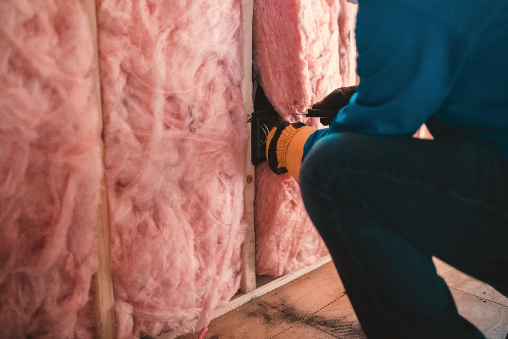

01 · Référencée RGE
Isolation par l'intérieur
Le poste principal de la rénovation énergétique en intérieur. Darras Finition est référencée RGE pour ces travaux, ce qui ouvre l'accès aux aides selon votre situation.
- Isolation des murs par l'intérieur, sur ossature ou en doublage collé
- Isolation des rampants de toiture pour les combles aménagés
- Isolation des plafonds
- Pose du pare-vapeur et traitement des jonctions